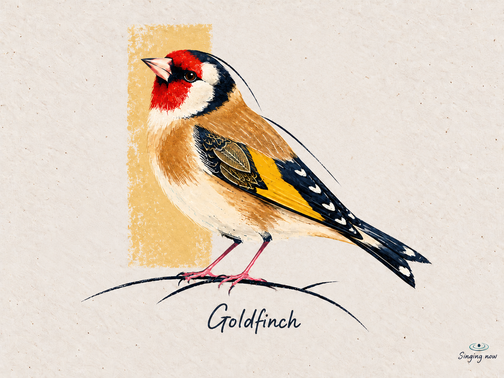
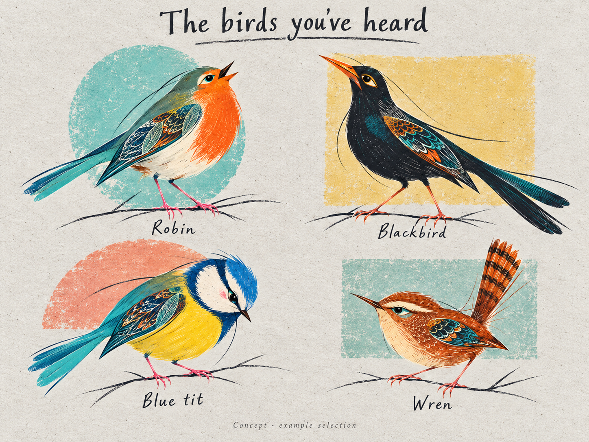
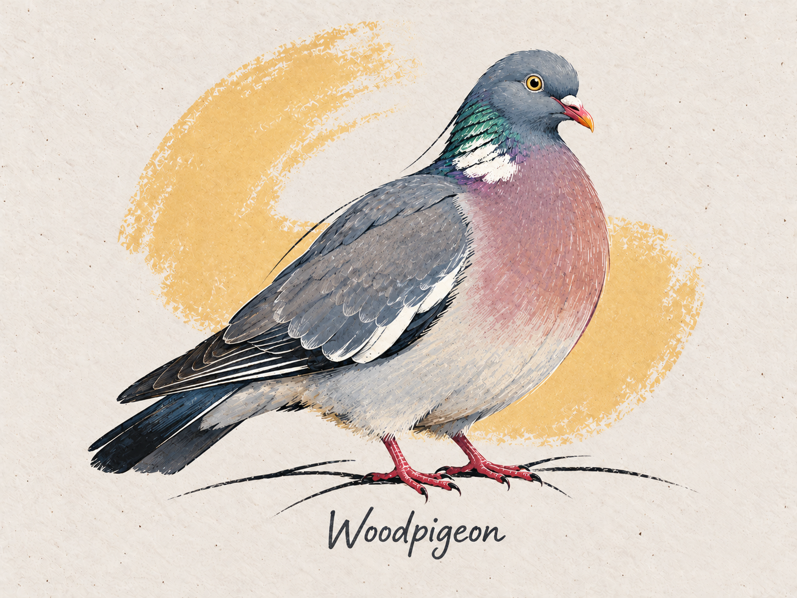

The finished bird.
Recognisable birds, individual character, rich pigment and expressive drawing. A shared artistic language with room for invention.
Preserve the craft and visual hierarchy. Explore the pose, palette, detail and abstract composition. The existing birds show possibilities; new portraits can introduce their own ideas. See the Woodpigeon refinement for the latest drawing guidance.
Five existing birds.
Robin, Goldfinch, Blue tit, Blackbird and Wren. Study the paper, pigment, linework and detail across these originals. Their poses, motifs and backgrounds show possibilities; new birds have room to introduce their own ideas. Select an image to open the full-size source.


Character comes from the drawing.

Give each portrait a clear artistic intention. Character can emerge through coordinated posture, gaze, proportion, colour and line. A single emphasis can be a useful starting point, but it is not a quota. Keep identifying features legible.
Softness underneath. Precision on top.
At a distance, the silhouette and colour identify the bird. Closer, feather groups establish form. Fine pencil, engraving and paper texture reward a longer look. Choose where detail and quiet passages belong for each composition.
Clear shapes carry the detail.
The preferred Woodpigeon is a small shift toward the original batch’s graphic drawing. Its pose and proportions remain very close to the earlier version. The difference lies in how the feathers, pigment and contours are organised.



| What changed | Carry into future birds |
|---|---|
| More legible overlapping coverts and long flight-feather shapes | Organise plumage into clear pigment masses and rhythmic feather groups. |
| Stronger dark separations and selected pale edges | Use contrast to explain structure, in colours appropriate to the species. |
| Fine lines sit inside clearer larger shapes | Keep intricate work, with a readable hierarchy. More tiny marks alone do not create character. |
| More decisive long and broken contours | Vary line weight, taper and rhythm; avoid outlining every edge equally. |
Slight stylisation can come from drawing decisions. Preserve species anatomy while making shape and line more deliberate. The pigeon’s gold scallops, ochre arc and proportions remain its own choices. New birds can use different marks, colours and abstract compositions.
Use v2 alongside the original collection as a rendering reference. The comparison records the user’s preferred direction; it does not require less detail, more anatomical exaggeration or flat vector treatment.
What stays. What changes.
| Shared | Chosen for each species |
|---|---|
| Paper, pigment and line language | Anatomy, plumage and the balance of soft and crisp passages |
| Considered, recognisable character | Posture, gaze, proportion and line rhythm; no one-feature quota |
| Clear pigment masses with selectively precise drawing | Feather rhythm, contrast, edge treatment and detail location; ornament is optional |
| Simple abstract support for the bird | No shape, one form or several; open vocabulary, crop, overlap and placement |
| A bird-led composition with exposed paper | Facing, support and pose; not every species needs a branch |
| Understated naming and tiny corner state | Species name and truthful activity/history |
Let colour relationships vary: different moods, ink tones and unexpected accents can belong together. Preserve identifying plumage. The existing navy, turquoise, coral and ochre are references, not a fixed swatch list.
Backgrounds are open to invention. A cropped arc, diagonal band, loose polygon, incomplete outline or overlapping washes could work—as could exposed paper alone. These are possibilities, not a new checklist. Keep the treatment simple and compatible with the bird’s materials; full scenic backgrounds stay out.
Let each bird keep its shape.
Possible starting points
- Owls: facial structure and posture; restrained eyes and species-correct features.
- Pale birds: more exposed paper and quiet cool shadows; less added ornament.
- Raptors: bearing and silhouette; precise identifying marks.
- Waterbirds: a simple ground or water stroke, or no support.
Drift to catch early
- Uniformly soft, generic watercolour with lost detail.
- Dense microtexture or continuous tonal modelling that obscures the larger feather shapes.
- Uniform outlines or extra gold ornament added as a shortcut to stylisation.
- Exaggeration that obscures species identity or becomes a generic mascot.
- Identical leaf badges or bright recolouring across every bird.
- Costumes, forced jokes, fun facts or scenery doing the work of character.
The Goldfinch demonstrates restraint and detail; the Robin and collection sheet demonstrate expressive gesture. None sets a ceiling on creativity. Judge whether a new concept has both the collection’s craft and a character of its own.
A brief that leaves room.
Record verified identifiers and an artistic intention, then distinguish decisions from questions left open for exploration. Consider composition, colour, detail and background together. Review the result beside the originals for shared craft and individual expression—not for a matching inventory of shapes and motifs.
Reusable prompt structure
Create a finished [SPECIES] portrait for the Birdsong-to-Art collection. Use the supplied original collection references for material, expressive linework and finish. Use preferred Woodpigeon v2, when supplied, to calibrate graphic organisation. V1 is comparison-only; keep anatomy specific to the new bird. Use [VERIFIED SPECIES REFERENCES] for anatomy and identifying plumage. Artistic intention: [DESIRED FEEL / OPEN DIRECTION]. Pose and expression: [DECIDED CHOICES OR LEAVE OPEN FOR INVENTION]. Preserve [DIAGNOSTIC FEATURES]. Do not borrow the anchor birds' anatomy. Bold silhouette and species-led colour on cold-pressed ivory paper. Translucent underpainting, rich pigment, broken dry-print grain, fine expressive contours in a palette-related ink tone, and sharp coloured-pencil feather work. Organise plumage into clear pigment masses and rhythmic feather groups. Selected dark separations, pale edges and tapered or broken contours articulate form. Keep rich fine detail inside readable larger shapes; avoid uniform microtexture or soft tonal modelling that dissolves them. Achieve slight stylisation through drawing decisions while preserving species anatomy. Choose where precise detail and quieter passages belong. Invent suitable marks and motifs; an ornamental wing is optional. Let line rhythm support the artistic intention. Colour: [SPECIES COLOURS AND DESIRED RELATIONSHIPS, OR EXPLORE]. Background: [OPEN OR A CHOSEN ABSTRACT DIRECTION]. No shape, one form or several simple elements are all valid. Explore shape, crop, overlap, scale and placement while keeping the bird dominant. Landscape 4:3; decide pose, scale, support and negative space for this concept. Reserve room for understated naming and a tiny lower-right annotation. Match the collection's craft while exploring a fresh interpretation. Use the existing birds as references, not limits. Avoid generic mascot eyes, costume-led character, scenic habitat, all-over ornament, sticker outline, heavy grunge, jokes, fun facts or a uniformly soft finish.
Full reusable art-direction reference · Species brief template
The reference image and review process are part of the system: prompt wording alone cannot guarantee an exact match. Approve the finished artwork before adapting its painting progression.